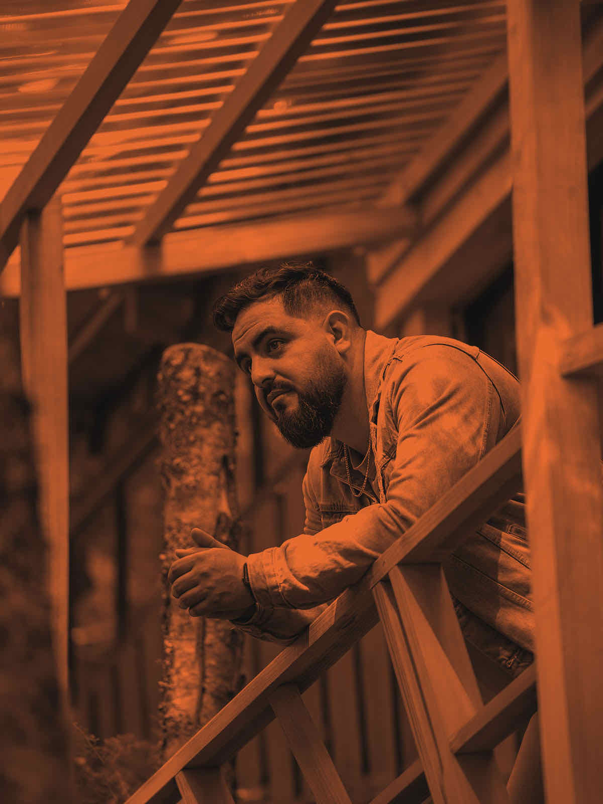

Sesión 01. Una noche donde tu voz resuena en la de otros. Donde cada uno importa. Te invitamos a vivirla.
Vengas de donde vengas, seas quien seas. De cualquier iglesia, trasfondo, ciudad. No importa. Acá todos son bienvenidos.
Tu adoración importa aquí. No eres espectador. Eres parte de lo que sucede esta noche. Juntos hacemos esto.
El espacio respira como un hogar. Sin distancia. Sin jerarquía. Lámparas cálidas, alfombra, gente cerca. Solo eso.
Ecos de la Casa nace como un espacio de adoración en comunidad, pensado para reunir, sesión a sesión, a distintos cantantes cristianos de Latinoamérica. No es el proyecto de un solo artista — es una casa abierta que se construye entre todos los que se suman a cada encuentro. Cada sesión sumará nuevas voces, nuevas historias, y la misma búsqueda de adorar juntos.
Alex Caniulef es un artista cristiano chileno que busca transmitir mensajes de fe, esperanza y amor a través de canciones honestas y cercanas. Detrás de canciones como Imperfecto, Yo A Ti Te Amo y Dios No Está En Mi Contra, Alex abre la primera sesión de Ecos de la Casa, poniendo la primera piedra de este espacio que seguirá sumando nuevas voces con cada encuentro.

Grabado en los lugares más hermosos de Chile. Adoración en español que resuena.
Escuchar ahora"Se nota que esto no es un show — es un grupo de gente cantando junta. Eso es lo que más espero de la Sesión 01."
"Un espacio íntimo donde se siente lo que se está viviendo, no solo se mira desde lejos."
"Ecos de la Casa nace del deseo de crear un espacio genuino, donde la adoración se vive junto a otros, no solo se escucha."
Sábado, 29 de Agosto de 2026 · 18:00 hrs
Auditorio SOFOFA — Av. Andrés Bello 2777, Las Condes, Región Metropolitana.
Preventa: $10.000 · Entrada general: $15.000
Máximo 150 personas — intentaremos guardar la intimidad.
Sí, es apto para todas las edades. El ambiente es familiar e íntimo.
No, el lugar no cuenta con estacionamiento propio. Te recomendamos buscar opciones cercanas al Auditorio SOFOFA.
Sí, queremos que disfrutes y compartas esta noche con tus círculos.
El evento es en interior. No te preocupes.
Preferentemente no. Compramos con antelación para cupo garantizado.
Sí, SOFOFA es accesible (ascensor y acceso sin escalones).
El lobby se abre también a emprendimientos cristianos que forman parte de esta comunidad. Un espacio para conocerlos, conversar, y llevarte algo a casa.